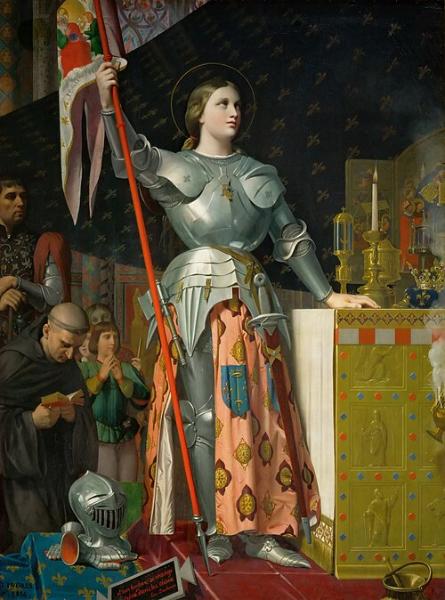
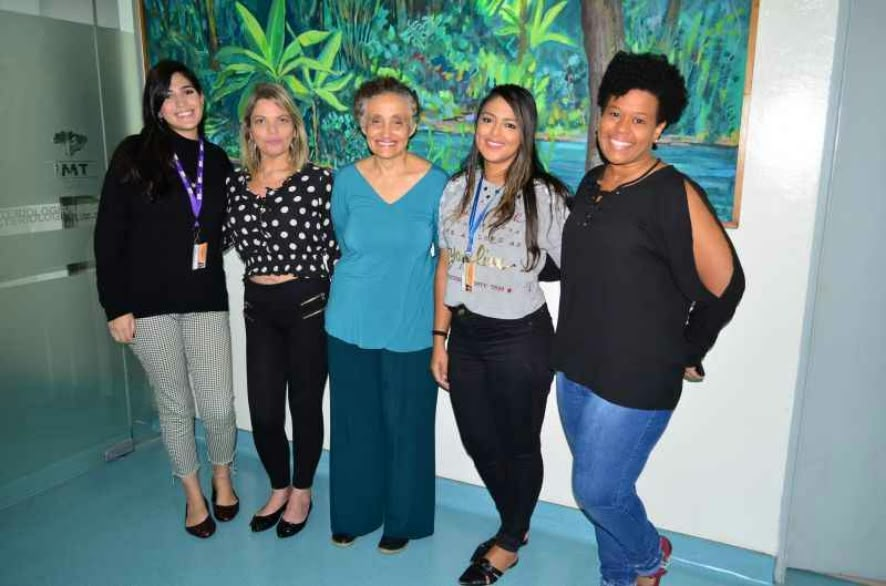

Mesmo diante às dificuldades históricas estabelecidas, mulheres desenvolvem grandes contribuições ao mundo científico
Por Emilly Matos, Guilherme Ferreira e Núbia Nunes
Ao longo da história, mulheres de diferentes sociedades enfrentaram restrições à participação política, à autonomia econômica e ao acesso à educação. Essas limitações variaram conforme o período histórico, a cultura e a posição social e contribuíram para a formação de estruturas de desigualdade de gênero que passaram a ser contestadas por movimentos de mulheres.
Durante a Idade Média e, principalmente, na Idade Moderna, mulheres enfrentaram restrições sociais e foram alvo de perseguições em diferentes contextos. Entre os séculos XV e XVIII, a chamada caça às bruxas atingiu diversas regiões da Europa e da América colonial. Estima-se que entre 40 mil e 60 mil pessoas tenham sido executadas sob acusações de bruxaria, sendo as mulheres a maioria das vítimas. Embora autoridades religiosas tenham contribuído para legitimar determinadas perseguições, tribunais civis e conflitos locais também tiveram papel importante nesses processos. As acusações eram influenciadas por crenças religiosas, tensões sociais e concepções sobre o papel das mulheres na sociedade.
No Brasil, a conquista dos direitos políticos das mulheres foi resultado de décadas de mobilização. Em 24 de fevereiro de 1932, o Código Eleitoral, instituído pelo Decreto nº 21.076, reconheceu nacionalmente o direito das mulheres de votar e serem votadas. A conquista foi impulsionada pela professora Maria Lacerda de Moura e a bióloga Bertha Lutz, duas das principais lideranças do movimento sufragista brasileiro. Entretanto, o direito ainda não era exercido em condições plenamente iguais: a legislação inicial mantinha restrições relacionadas ao estado civil e à situação econômica de algumas mulheres. Em 1934, essas restrições foram eliminadas do Código Eleitoral, embora o voto feminino ainda não fosse obrigatório nas mesmas condições aplicáveis aos homens. A obrigatoriedade foi ampliada às mulheres em 1946.
Hoje, mulheres e homens têm direitos e deveres iguais perante a lei, conforme estabelece o artigo 5º, inciso I, da Constituição Federal de 1988: “homens e mulheres são iguais em direitos e obrigações, nos termos desta Constituição”. O artigo reúne direitos e garantias fundamentais, como a igualdade perante a lei, a liberdade, a segurança e a proteção à vida. Esses direitos constituem a base jurídica para a garantia da dignidade humana e para o combate à discriminação. Entretanto, a existência de garantias legais não significa que a igualdade seja plenamente alcançada na prática, uma vez que ainda existem desigualdades sociais, econômicas e políticas que afetam a vida das mulheres.
Nas eleições de 2026 no Brasil, houve um aumento da representação feminina nos cargos eleitos em comparação aos números de 2022, momento também marcado por disputas federais e estaduais. 369 mulheres foram eleitas no primeiro turno, 61 a mais que na última eleição, quando 308 alcançaram o cenário político. O crescimento é de 20% na quantidade de eleitas, resultado que permanece baixo diante do eleitorado majoritariamente feminino no país. De acordo com o Tribunal Superior Eleitoral (TSE), as mulheres correspondem a 83,9 milhões de eleitoras, o que equivale a 52,84% do eleitorado brasileiro. Em setembro deste ano, mulheres ocupavam 88 das 513 cadeiras na Câmara dos Deputados e 15 de um total de 81 vagas no Senado.
A igualdade garantida pela legislação não significa que homens e mulheres desfrutem das mesmas condições na prática. Essa diferença também se manifesta no mercado de trabalho: segundo dados do Instituto Brasileiro de Geografia e Estatística (IBGE), em 2024, o rendimento médio habitual das mulheres ocupadas foi de R$ 2.778, enquanto o dos homens chegou a R$ 3.533. Na comparação entre os dois valores, as mulheres receberam, em média, 21,4% menos que os homens. O dado evidencia que, apesar dos avanços na conquista de direitos, a desigualdade econômica permanece como um dos desafios à igualdade de gênero no Brasil.
Como se dá a presença da mulher na ciência?
No Brasil são formadas mais cientistas mulheres do que homens. Elas correspondem a maioria das estudantes e representam 57% das pessoas tituladas na pós-graduação, de acordo com os dados do Plano Nacional de Pós-Graduação 2025 – 2029 (PNPG). Também possuem um número expressivo no que tange as bolsas de Coordenação de Aperfeiçoamento de Pessoal de Nível Superior (CAPES) com 58% de bolsistas em todo território nacional, e 53% de bolsas no exterior concedidas às mulheres.
Mesmo o número de doutoras sendo superior no país há mais de 20 anos, representam somente 43% do corpo docente de pós-graduação. Em áreas de estudo de tecnologia, engenharia e matemática, a desigualdade é bastante expressiva. Em engenharia, apenas 23% das mulheres compõem o quadro de professores de instituições, e 24% em ciências exatas e da terra.
A maneira como as mulheres estão inseridas na ciência no século XXI também é reflexo da deslegitimação e limitação impostas a elas durante a história. No país, apenas em 1827 a partir da Lei Geral, puderam ingressar na escola básica, que era separada da masculina e visava principalmente o ensino de atividades domésticas para o cuidado da família. Conteúdos como matemática eram ministrados com menor frequência.
Além da escolarização tardia, as mulheres apenas tiveram a permissão para cursar o ensino superior no Brasil em 1879 por meio do Decreto Lei nº 7.247/1879. Porém era necessário que a matrícula fosse realizada por seus pais ou maridos. Historicamente, a limitação estipulada a elas foi além da busca por conhecimento. A física austríaca Lise Meitner (1878–1968), que trabalhou por mais de 30 anos em pesquisas sobre fissão nuclear com o químico alemão Otto Hahn, teve seu reconhecimento invisibilizado devido ao gênero, exílio político em período nazista e rivalidades acadêmicas. Apenas Hahn recebeu o mérito da descoberta e o Nobel de química em 1944. A cientista foi indicada 48 vezes, sendo 29 para Física e 19 para Química, porém faleceu sem o reconhecimento que merecia.
Apesar dos desafios, a representatividade feminina permanece viva na ciência. Entre 2023 e 2025, o CNPQ concedeu cerca de 163 mil bolsas de iniciação científica, sendo 56,3% para o público feminino e 20,5% para mulheres negras. A iniciação científica (IC) possibilita a estudante realizar pesquisa acadêmica durante a graduação com a participação em um projeto de investigação sob a orientação de um professor (a) ou pesquisador.
A Maria Eduarda Alves, 21, discente do curso de Jornalismo da PUC Goiás, mesmo tão nova, já está inserida na ciência. A jovem que realiza iniciação científica voluntária sobre o tema "O luto no jornalismo digital: a construção de narrativas sobre o feminicídio", percebe a importância da presença das mulheres no mundo científico. Quando criança, não via muitas cientistas em desenhos e filmes. Foi na escola, durante a adolescência, que teve consciência da representatividade da mulher na pesquisa e experimentação de ideias. "Foi a primeira mulher na ciência que me brilhou os olhos", afirma ao lembrar da física e química Marie Curie.
Maria Eduarda evidencia o quão longe chegaram e os diversos segmentos da ciência que podem ocupar. A representação é fundamental para estimular outras mulheres a trabalharem com o que aspiram, seja na ciência ou em outras áreas, como economia, educação ou saúde.
Conheça algumas mulheres brilhantes:
Florence Nightingale

Florence Nightingale, fundadora da Enfermagem moderna, tratou e cuidou dos feridos em batalhas, na Guerra da Crimeia (1853-1856). Florence percorria a noite, com uma lâmpada nas mãos até o local onde estava os soldados feridos, para cuidar dos seus pacientes. Em 1859, desenvolveu um projeto da Escola de Enfermagem do Hospital Saint Thomas, em Londres, hoje parte do King’s College London. O curso tinha duração de cerca de um ano, com todas as aulas ministradas por médicos. Seu nome também batiza o juramento e a medalha concedidos a profissionais da área, além do Dia Internacional da Enfermagem, celebrado em seu aniversário.
Marie Curie

Marie Curie, uma das cientistas mais importantes do campo de radioatividade, descobriu dois novos elementos químicos: o polônio e o rádio. Com isso, foram revelados que alguns materiais podem emitir energia por muito tempo, sem uma fonte externa.
Curie percebeu que a radiação poderia ser usada como um certo tipo de tratamento para destruir células doentes no corpo humano. Atualmente, o tratamento é conhecido como radioterapia, e utiliza radiação para destruir células cancerígenas para combater o câncer.
A cientista foi a primeira mulher a ganhar um Prêmio Nobel e única a ganhar dois prêmios em áreas diferentes: Física e Química.
Joana D'Arc

Conhecida como “Donzela de Orleans”, Joana D’Arc foi uma guerreira militar, alcançando a liderança do exército na França. Joana d’Arc afirmava receber orientações de São Miguel Arcanjo e das santas Catarina de Alexandria e Margarida de Antioquia. Segundo seu relato, essas vozes a instruíram a apoiar o delfim Carlos, posteriormente coroado como Carlos VII, e a expulsar os ingleses do território francês. Em 1429, Carlos enviou Joana a Orleães como parte de um exército de socorro, que conseguiu romper o cerco em apenas nove dias, conseguindo sair vitoriosa.
Após o fracasso na tentativa de retomar Paris, com o Cerco de Paris, a influência de Joana d’Arc entre a nobreza francesa diminuiu. Em 23 de maio de 1430, ela foi capturada em Compiègne pelos borguinhões, aliados dos ingleses, e entregue a um tribunal eclesiástico presidido pelo bispo Pierre Cauchon. Condenada por heresia, Joana foi executada na fogueira em 30 de maio de 1431, aos 19 anos, e posteriormente transformada em símbolo do patriotismo francês. Em 1456, uma revisão anulou sua condenação, e Joana foi declarada inocente; séculos depois, foi beatificada, em 1909, e canonizada, em 1920, pela Igreja Católica Romana.
Jaqueline Goes de Jesus, Ingra Morales, Flávia Salles e Erika Manuli

As biomédicas Jaqueline Goes de Jesus, Ingra Morales, Flávia Salles e a farmacêutica Erika Manuli são as pesquisadoras que decifraram a amostra do primeiro caso de infecção de Covid-19 na América Latina. Em apenas 48 horas o resultado saiu, demonstrando a estrutura do vírus. O sequenciamento do genoma SARS-CoV-2, causador da doença, foi fundamental para a criação rápida de vacinas diante a pandemia de 2020. As cientistas faziam parte da equipe do Centro Conjunto Brasil-Reino Unido para Descoberta, Diagnóstico, Genômica e Epidemiologia de Arbovírus (CADDE), que era liderado pela médica Ester Sabino, 60, e composta por mais quatro mulheres e um homem.